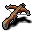
アーバレスト arbalest
鋼で補強され、巻き上げ機で弦を引く、矢を撃つための大きな機械だ。装填して撃つのに少し時間がかかる。
基本命中: -2 基本ダメージ: 16 基本所要時間: 1.9
この武器の最小所要時間(1.0)にはスキルレベル18で到達する。
重い防具を着ると、この武器での攻撃速度が落ちる。
この武器は「射撃武器」に分類される。両手持ちの武器だ。
最大+9まで強化できる。
全291種を種類ごとに分けて載せています。薬や巻物、ワンドの見た目(色や模様)はプレイのたびに変わるので載せていません。
武器矢弾・投擲物防具ワンド巻物装身具薬魔法書魔法の杖オーブ道具護符宝石金貨その他
| 名前 | スキル | 基本ダメージ | 基本命中 | 基本所要時間 |
|---|---|---|---|---|
| スリング | 射撃武器 | 7 | +0 | 1.4 |
| ショートボウ | 射撃武器 | 8 | +2 | 1.4 |
| オークの弓 | 射撃武器 | 11 | -3 | 1.5 |
| ロングボウ | 射撃武器 | 14 | +0 | 1.7 |
| アーバレスト | 射撃武器 | 16 | -2 | 1.9 |
| ハンドキャノン | 射撃武器 | 16 | +3 | 1.9 |
| トリプルクロスボウ | 射撃武器 | 23 | -2 | 2.3 |
| ハンドアックス | 斧 | 7 | +3 | 1.3 |
| ウォーアックス | 斧 | 11 | +0 | 1.5 |
| ブロードアックス | 斧 | 13 | -2 | 1.6 |
| バトルアックス | 斧 | 15 | -4 | 1.7 |
| 処刑人の斧 | 斧 | 18 | -6 | 1.9 |
| 杖 | 棒術 | 5 | +5 | 1.2 |
| 六尺棒 | 棒術 | 10 | +3 | 1.3 |
| ラジャタン | 棒術 | 16 | -3 | 1.4 |
| ダガー | 短剣 | 4 | +6 | 1.0 |
| クイックブレード | 短剣 | 4 | +6 | 1.5 |
| ショートソード | 短剣 | 5 | +4 | 1.0 |
| レイピア | 短剣 | 7 | +4 | 1.2 |
| 棍棒 | 鈍器 | 5 | +3 | 1.3 |
| 鞭 | 鈍器 | 6 | +2 | 1.1 |
| メイス | 鈍器 | 8 | +3 | 1.4 |
| フレイル | 鈍器 | 10 | +0 | 1.4 |
| 悪魔の鞭 | 鈍器 | 11 | +1 | 1.1 |
| 聖なる鞭 | 鈍器 | 12 | +0 | 1.1 |
| 大型フレイル | 鈍器 | 13 | -3 | 1.3 |
| モーニングスター | 鈍器 | 13 | -2 | 1.5 |
| イブニングスター | 鈍器 | 15 | -1 | 1.5 |
| 大型メイス | 鈍器 | 17 | -4 | 1.7 |
| 巨大棍棒 | 鈍器 | 20 | -6 | 1.6 |
| 釘つき巨大棍棒 | 鈍器 | 22 | -7 | 1.8 |
| ファルシオン | 長剣 | 8 | +2 | 1.3 |
| ロングソード | 長剣 | 10 | +1 | 1.4 |
| シミター | 長剣 | 12 | +0 | 1.4 |
| 悪魔の刃 | 長剣 | 13 | -1 | 1.3 |
| 悪魔祓いの刃 | 長剣 | 14 | -2 | 1.2 |
| ダブルソード | 長剣 | 15 | -1 | 1.5 |
| グレートソード | 長剣 | 17 | -3 | 1.7 |
| トリプルソード | 長剣 | 19 | -4 | 1.8 |
| スピア | 長柄武器 | 6 | +4 | 1.1 |
| トライデント | 長柄武器 | 9 | +1 | 1.3 |
| 悪魔の三叉戟 | 長柄武器 | 12 | +1 | 1.3 |
| ハルバード | 長柄武器 | 13 | -3 | 1.5 |
| トリシューラ | 長柄武器 | 13 | +0 | 1.3 |
| パルチザン | 長柄武器 | 14 | +1 | 1.7 |
| グレイブ | 長柄武器 | 15 | -3 | 1.7 |
| バルディッシュ | 長柄武器 | 18 | -6 | 1.9 |
| 名前 | 基本防御値 | 重さ |
|---|---|---|
| 水晶の鎧 | 14 | 23 |
| ゴールドドラゴンの鱗一式 | 12 | 23 |
| プレートアーマー | 10 | 18 |
| タワーシールド | 13 | 15 |
| シャドウドラゴンの鱗一式 | 11 | 15 |
| ストームドラゴンの鱗一式 | 10 | 15 |
| 鎖かたびら | 8 | 14 |
| パールドラゴンの鱗一式 | 10 | 11 |
| アイスドラゴンの鱗一式 | 9 | 11 |
| カイトシールド | 8 | 10 |
| スケイルメイル | 6 | 10 |
| ファイアドラゴンの鱗一式 | 8 | 9 |
| 水銀ドラゴンの鱗一式 | 9 | 7 |
| 沼ドラゴンの鱗一式 | 7 | 7 |
| リングメイル | 5 | 7 |
| 馬甲 | 4 | 6 |
| アシッドドラゴンの鱗一式 | 6 | 5 |
| バックラー | 3 | 5 |
| レザーアーマー | 3 | 4 |
| トロル革の鎧 | 3 | 4 |
| スチームドラゴンの鱗一式 | 5 | 0 |
| 獣の皮 | 2 | 0 |
| ローブ | 2 | 0 |
| クローク | 1 | 0 |
| 兜 | 1 | 0 |
| pair of boots | 1 | 0 |
| pair of gloves | 1 | 0 |
| 帽子 | 0 | 0 |
| オーブ | 0 | 0 |
| スカーフ | 0 | 0 |

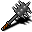
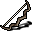
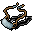
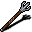
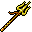
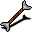
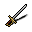
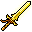
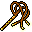
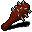
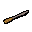
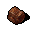
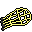
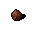
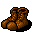
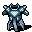
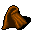
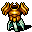
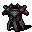

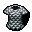
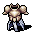
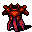
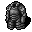
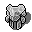
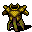
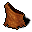
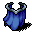
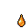
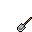
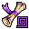
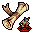
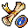
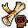
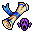
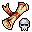
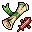
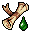
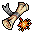
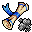
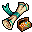
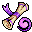
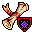
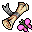
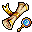
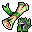
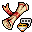
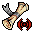
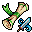
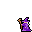